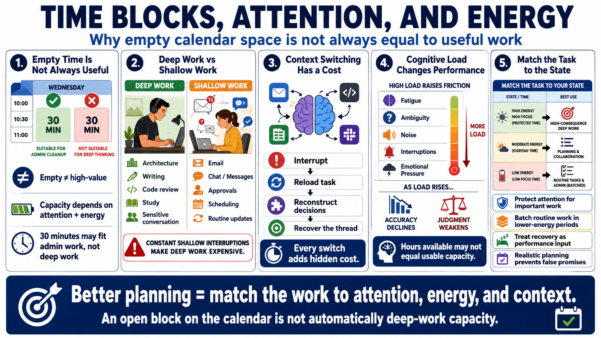

Time, Attention, and Energy
Connecting to LMS... Progress: in progress

Narration
The first mistake in time management is assuming that a time block is useful just because it is empty. In reality, attention and energy determine what kind of work fits inside the block. A half hour between meetings may be fine for administrative cleanup, but poor for architectural thinking, writing, code review, study, or a sensitive conversation. The same number of minutes can have very different productive capacity.
Deep work requires sustained attention, a stable context, and enough cognitive room to hold the problem in mind. Shallow work is not bad; messages, approvals, scheduling, and routine updates often keep operations moving. But shallow work becomes expensive when it constantly interrupts deep work. Each context switch forces attention to reload the task, reconstruct decisions, and recover the thread of thought.
Cognitive load is the mental demand placed on working memory. Fatigue, ambiguity, noise, interruptions, and emotional pressure all raise that load. When load is high, people may still push through, but accuracy and judgment often suffer. A time problem may actually be an attention problem. It may also be an energy problem, where the person has hours available but not enough recovery to use those hours well.
A practical system matches task type to available state. High-consequence work deserves protected attention. Routine work can be grouped into lower-energy periods. Recovery should be treated as an input to performance, not as a reward for having already performed. When planning accounts for attention and energy, the calendar becomes more realistic and less likely to create false promises.